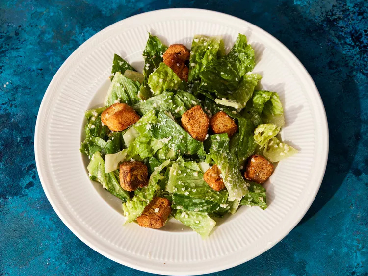

Home
Classic Caesar Salad

Description
This Caesar salad is the same recipe we made at a very fancy restaurant while I was in college. The best part of the job was making tableside dishes, including this Caesar salad which is the best I've ever had.
Ingredients
- Chopped lettuce.
- Parmesan chesse.
- Croutons.
- Cloves garlic, finely chopped.
- Lemon, juiced.
- Tablespoons red wine vinegar.
- Large egg yolk.
- Olive oil.
- Salt and ground black pepper to taste.
Steps
- Gather all ingredients.
- To make the dreesing, mash the garlic in a large salad bowl. Add lemon juice, vinegar, mustard, eggyolk, whisk until smooth and creamy. Gradually stream in olive oil while whisking constantly. Season with salt and black pepper.
- To make the salad, gently mix the lettuce and the Parmesan cheese into dressing until thoroughly coated.
- Serve salad topped with croutons.
Other Recipes